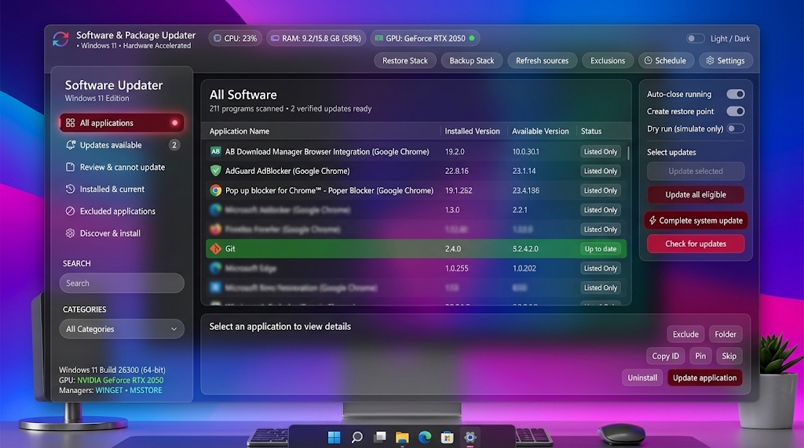

Scans 200+ local applications across 4 repositories in under 1.8 seconds. Decoupled worker scheduler with 120Hz velocity lerp.
Neon cyan edge flares, real-time download meters, and non-blocking queue draining.
winget install --id rupom.WingetUpdater -e